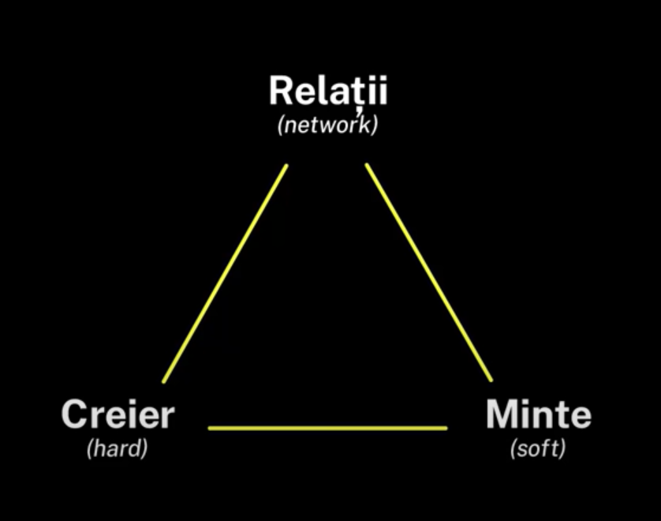
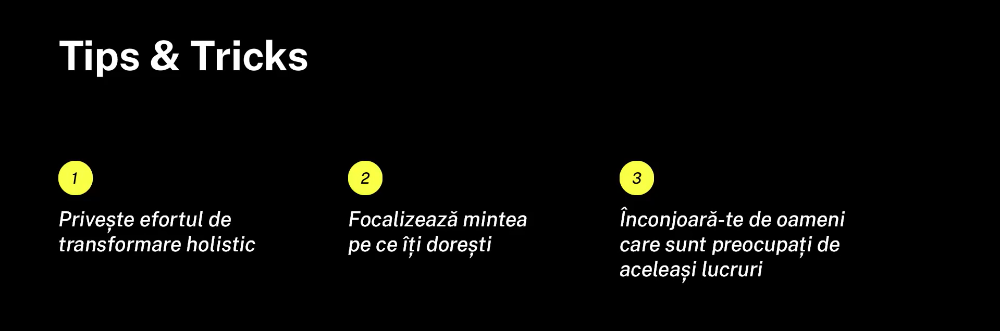
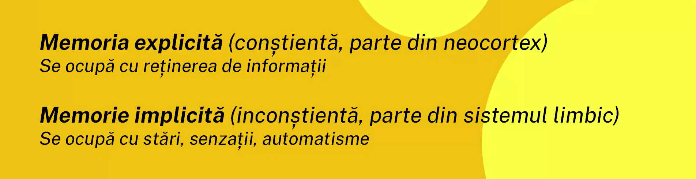
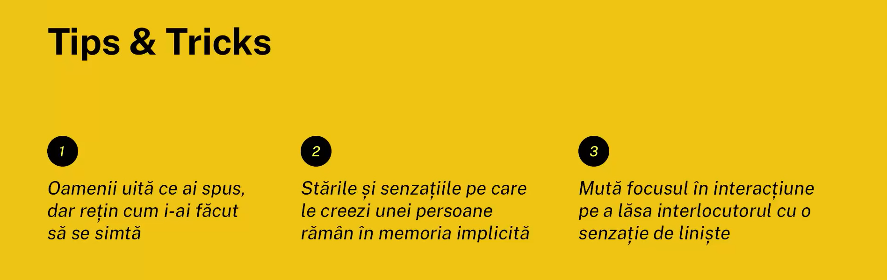

TREPIEDUL VIEȚII
"Surround yourself with passionate people. The fastest way to do things you don’t think can be done
is to surround yourself with people already doing them." (Scott Dinsmore)

În cartea “Mind sight”, Daniel J. Siegel propune un nou concept neuroștiințific, conform căruia parcursul
nostru existențial se sprijină pe triunghiul vieții: creier, minte și relații. Creierul este suportul fizic prin care circulă energie și informație, mintea este procesul emergent
relațional care se ocupă cu reglarea fluxurilor de energie și informație, fiind într-o continuă schimbare
dictată de experiențele trăite, iar relațiile reprezintă felul în care schimbăm energie și informații cu
cei din jurul nostru. Astfel, mediul și persoanele cu care interacționăm cel mai des își lasă o puternică
amprentă asupra personalității noastre, schimbările făcându-se sesizate incluziv la nivelul structural al
creierului.
Mediul în care trăim și oamenii apropiați nouă influențează enorm felul în care gândim, în care luam
decizii, încrederea în noi și comportamentul pe care îl avem. Bineînțeles că fiecare are personalitatea lui,
dar studiile dovedesc că suntem influențați de mediul înconjurător mai mult decât ne imaginăm, iar un fapt
interesant este acela că “Noi suntem media celor cinci oameni cu care ne petrecem cel mai mult timp”.
Atenția fiecăruia dintre noi trebuie să fie orientată pe cele trei repere (creier, minte și relații) care
ne dirijează viața, iar dezechilibrul unuia dintre ele poate aduce modificări și la celelalte două, ele fiind
interconectate.

MEMORIA
În creierul uman informația ajunge pe căi electrochimice și se stochează în neuroni, producând memoria.
În fiecare zi, toate ideile se rearanjează și pot chiar trece din neuron în neuron, altele noi își fac loc,
iar cu fiecare secundă în plus devenim altă persoană. Creierul este un maestru al manipulării prezentului,
trecutului și viitorului. Suntem ancorați cu toate simțurile într-un prezent continuu și ce procesăm
devine memorie, iar ce ne vine din față pe o bandă rulantă, incert cu o grămadă de posibilități, își va găsi
locul în același prezent, apoi în aceeași memorie. Fără aceste date stocate în noi, suntem nuli, lipsiți de
personalitate și implicit de puterea de a ne dezvolta, pentru că ce ne face să evoluăm e tocmai dobândirea
neuronală, restructurarea memoriei întregi sub stimuli diverși.

MEMORIA IMPLICITĂ
- aceasta stochează în inconștient senzații, stări și emoții asociate cu
diverși stimuli percepuți de-a lungul vieții
- toate amintirile deținute de acest tip de memorie pot fi rescrise, dar acest proces
necesită ceva mai mult timp, deoarece este specifică “elefantului” care învață
prin repetiție și asociere
- în copilărie, majoritatea informațiilor se stochează doar în formă implicită,
fiind inaccesibile în mod conștient
MEMORIA EXPLICITĂ
- aceasta operează în limbaj abstractizat, funcție îndeplinită de neocortex, și îi ajută
pe oameni să conștientizeze anumite întâmplări care anterior se aflau în memoria implicită
- amintirile sunt modelate continuu, iar ceea ce ne aducem noi aminte este
altceva decât cele trăite cu adevărat
- la fiecare rechemare a unei amintiri, mintea face editări minimale asupra acesteia
